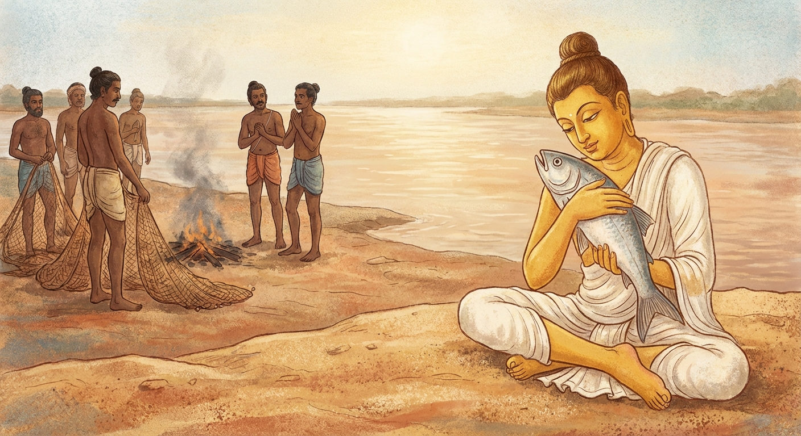

4. මච්ඡ ජාතකය (34)
“න මං සීතං න මං උණ්හ” (මට සීතලක්වත් උෂ්ණයක්වත් නැත) යනාදී වශයෙන් එන මේ ජාතක ධර්ම දේශනාව, බුදුරජාණන් වහන්සේ ජේතවනාරාමයේ වැඩ වසන සමයෙහි, පෙර ගිහි කල බිරිඳ කෙරෙහි ඇති වූ රාගයෙන් පෙළෙන භික්ෂුවක් අරබයා දේශනා කරන ලද්දකි. එකල බුදුරජාණන් වහන්සේ ඒ භික්ෂුවගෙන්, “මහණ, ඔබ සැබවින්ම උකටලීව (සසුන ගැන කලකිරීමෙන්) සිටින්නෙහි දැ”යි විමසූ සේක. “එසේය ස්වාමීනි” යැයි භික්ෂුව පිළිතුරු දුන්නේය. “කවුරුන් විසින් ඔබව උකටලී කරනු ලැබුවේ ද?” යි විමසූ විට, “ස්වාමීනි, මාගේ පුරාණ බිරිඳගේ අත්පහස ඉතා මිහිරිය, එබැවින් ඇයව අතහැරීමට මට නොහැකිය” යැයි පැවසීය. එවිට බුදුරජාණන් වහන්සේ, “මහණ, මේ ස්ත්රිය ඔබට අනර්ථකාරීය. පෙර ආත්මයකදීත් ඔබ මොබ නිසා මරණයට පත්වන්නට සිටියදී මා නිසා මරණයෙන් මිදුණේය” යැයි වදාරා අතීත කතාව ගෙනහැර දැක්වූ සේක.
අතීතයේ බරණැස් නුවර බ්රහ්මදත්ත රජු රාජ්ය කරන සමයෙහි බෝධිසත්වයෝ ඔහුගේ පුරෝහිතව උපන්හ. එකල ධීවරයෝ ගඟෙහි දැලක් එළූහ. එවිට කාම රතියෙහි ඇලුණු එක් මහා මත්ස්යයෙක් තමාගේ මැසින්න සමඟ ක්රීඩා කරමින් පැමිණියේය. ඔහුට පෙරටුව ගිය මැසින්න දැලේ ගඳ දැනී එය මගහැර ගියාය. එහෙත් කාමයෙන් මුසපත්ව සිටි ලොල් වූ මත්ස්යයා දැල ඇතුළටම පිවිසියේය. ධීවරයෝ මාළුවා දැලට හසු වූ බව දැන, දැල ඔසවා මත්ස්යයා ගෙන, ඌ නොමරාම වැලි තලාව මත දමා, “මූව අඟුරු මත පුළුස්සා කන්නෙමු”යි සිතා අඟුරු ගොඩකරමින් උල් ලීයක් සකස් කළහ. එකල මත්ස්යයා, “මේ අඟුරු ගොඩෙහි තැබීම හෝ උලෙන් ඇනීම හෝ වෙන යම් දුකක් හෝ මට පීඩාවක් නොවේ. එහෙත් ‘ඔහු නියත වශයෙන්ම වෙනත් මත්ස්ය ධේනුවක් සමඟ රතිය සඳහා යන්නට ඇතැ’යි සිතා මාගේ මැසින්න යම් දොම්නසකට පත්වේ ද, එයම මට මහත් වූ වේදනාවක් ය” යි හඬා වැළපෙමින් මේ ගාථාව පැවසීය.
“සීතල මට දුකක් නොවේ. උෂ්ණය ද මට දුකක් නොවේ. මේ දැලෙහි බැඳීම ද මට දුකක් නොවේ. එහෙත් මාගේ මැසින්න ‘මා අන් මසකු හා කාම රතිය පිණිස ගියේ යැ’යි සිතමින් යම් දුකක් විඳී නම්, එයම මට මහත් වූ දුකකි.”
එහි ‘න මං සීතං න මං උණ්හං’ යනු, මසුන් වතුරෙන් ගොඩගත් විට සීතල ඇති වෙයි, වතුර වියළී ගිය විට (හෝ ගින්න නිසා) උෂ්ණය ඇති වෙයි; මේ කරුණු දෙකම සලකා “මට සීතල හෝ උෂ්ණය පීඩා නොකරයි” යැයි හෙතෙම වැළපෙයි. අඟුරු මත පිසීම නිසා ඇතිවන දුකක් වේ නම්, එය ද අරබයා “උෂ්ණය මට දුකක් නොවේ” යැයි කියමින් වැළපෙයි. ‘න මං ජාලස්මි බාධනං’ යනු, මේ දැලෙහි යම් බැඳීමක් වී ද, එය ද මා නොපෙළයි යන්නයි. ‘යඤ්ච මං’ යනාදියේ සංක්ෂිප්ත අර්ථය මෙයයි: ඒ මැසින්න මා දැලට හසුවී කෙවුලන් විසින් අල්ලා ගනු ලැබූ බව නොදන්නීය. ඇය මා නොදකින විට, “ඒ මත්ස්යයා දැන් වෙනත් මැසින්නක් සමඟ කාම රතිය පිණිස යන්නට ඇතැ”යි සිතන්නීය. දොම්නසට පත් ඇයගේ ඒ සිතුවිල්ලම මා පෙළන්නේය යැයි හෙතෙම වැලි තලාව මත වැතිර සිටිමින් වැළපෙයි.
එම වේලාවෙහි පුරෝහිත බමුණා දාසයන් පිරිවරා ස්නානය කිරීම සඳහා ගං තෙරට පැමිණියේය. ඔහු වනාහි සියලු සතුන්ගේ හඬ තේරුම් ගත හැක්කෙකි. එබැවින් ඔහු මත්ස්යයාගේ විලාපය අසා මෙසේ සිතුවේය: “මේ මත්ස්යයා ක්ලේශ වසඟව වැළපෙයි. මෙසේ රාගයෙන් ආතුර වූ සිතින් යුතුව මිය ගියහොත් මොහු නිරයේම උපදිනු ඇත. මම මොහුට පිහිට විය යුතුය.” හෙතෙම ධීවරයන් වෙත ගොස්, “එම්බල දරුවනි, නුඹලා අපට වෑංජන පිණිස එක දවසක්වත් මාළුවෙකු නොදෙන්නහුද?” යි ඇසීය. ධීවරයෝ, “ස්වාමීනි, කුමක් කියන්නහුද? ඔබට රිසි මාළුවෙකු ගෙන ගිය මැනවැ”යි කීහ. “අපට වෙනත් මාළුවෙකුගෙන් වැඩක් නැත, මූවම දෙන්න” යැයි කී විට, “ගෙන ගිය මැනව ස්වාමීනි” යැයි ඔවුහු පැවසූහ. බෝධිසත්වයෝ මත්ස්යයා දෑතින්ම ගෙන ගං තෙර හිඳ, “පින්වත් මත්ස්යය, ඉදින් මම අද තා නොදැක්කේ නම්, තෝ ජීවිතක්ෂයට පත්වන්නෙහිමය. දැන් පටන්වත් ක්ලේශයන්ට වසඟ නොවව” යි අවවාද කොට, දියට මුදාහැර, ස්නානය කොට නගරයට පිවිසියේය.

බුදුරජාණන් වහන්සේ මේ ධර්ම දේශනාව ගෙනහැර දක්වා චතුරාර්ය සත්යය ප්රකාශ කළ සේක. දේශනාව අවසානයේ (උකටලී වූ) භික්ෂුව සෝවාන් ඵලයෙහි පිහිටියේය. ශාස්තෘන් වහන්සේ පූර්වාපර සන්ධි ගළපා මේ ජාතකය සමාප්ත කළ සේක: “එකල මැසින්න වූයේ මේ පුරාණ බිරිඳයි. මත්ස්යයා වූයේ උකටලී භික්ෂුවයි. එකල පුරෝහිතව සිටියේ නම් මම ම වෙමි.”
හතරවන මච්ඡ ජාතක වර්ණනාව නිමාවිය.